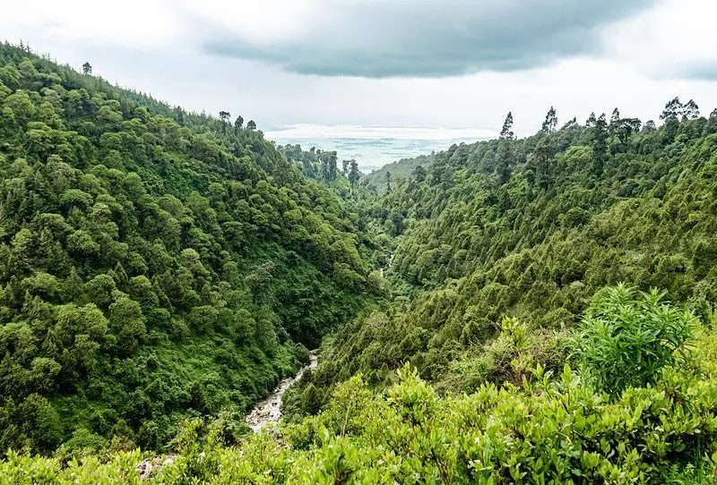
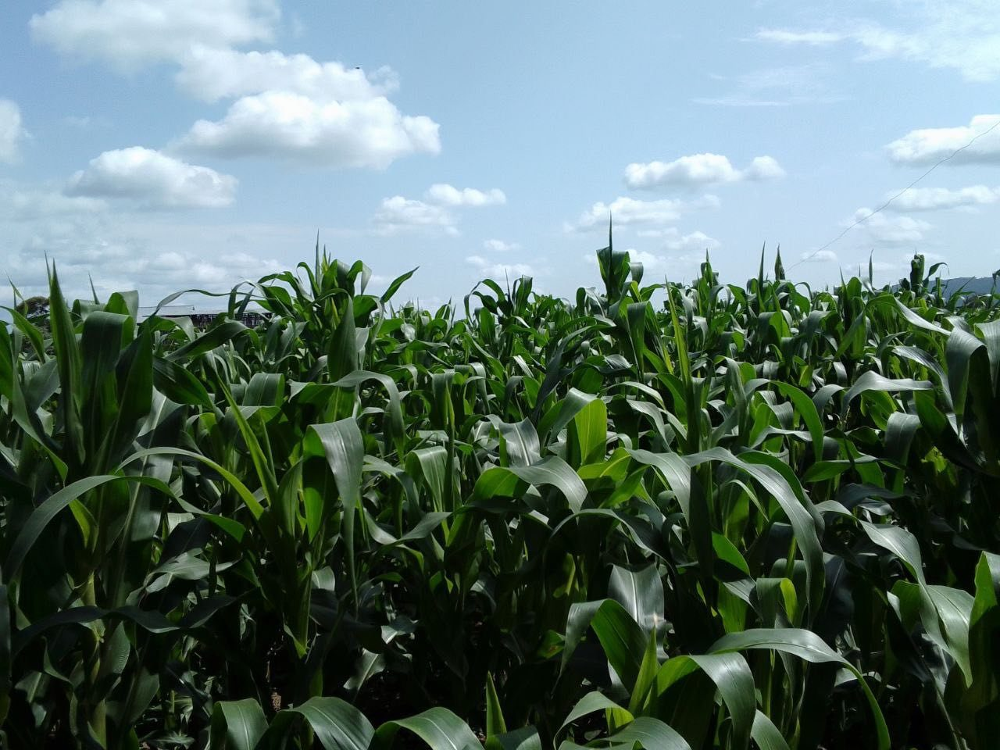
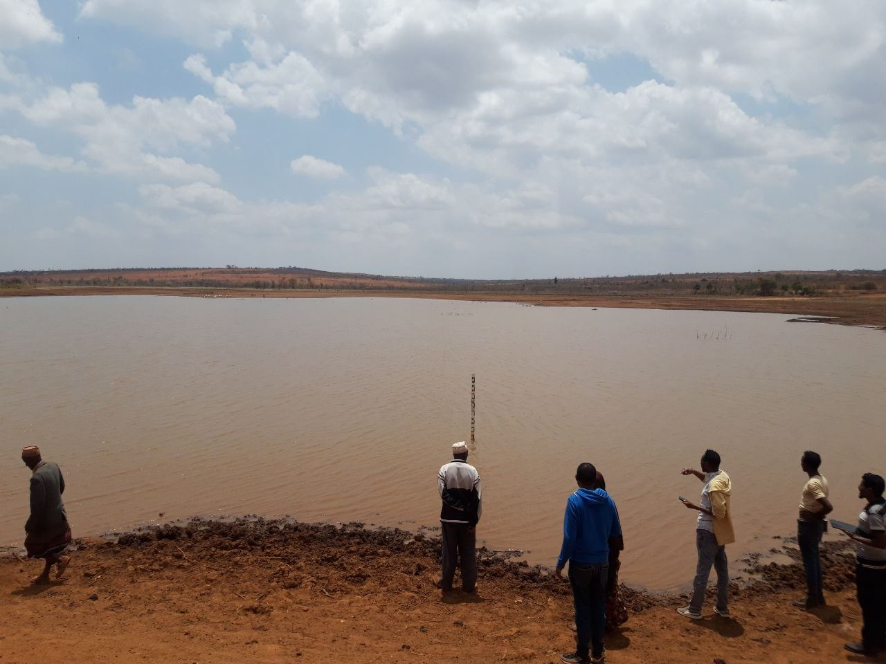
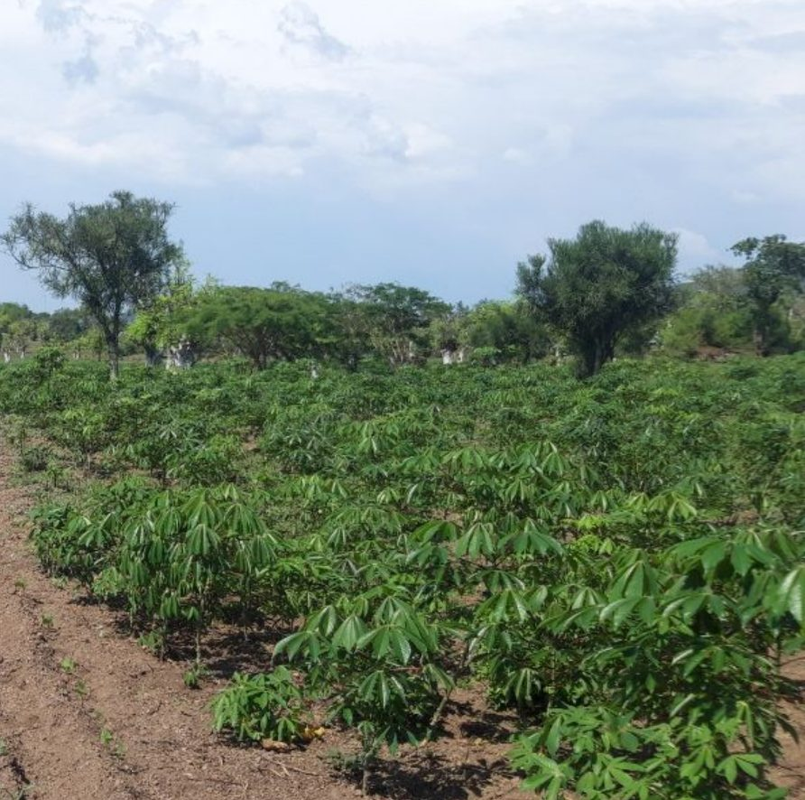
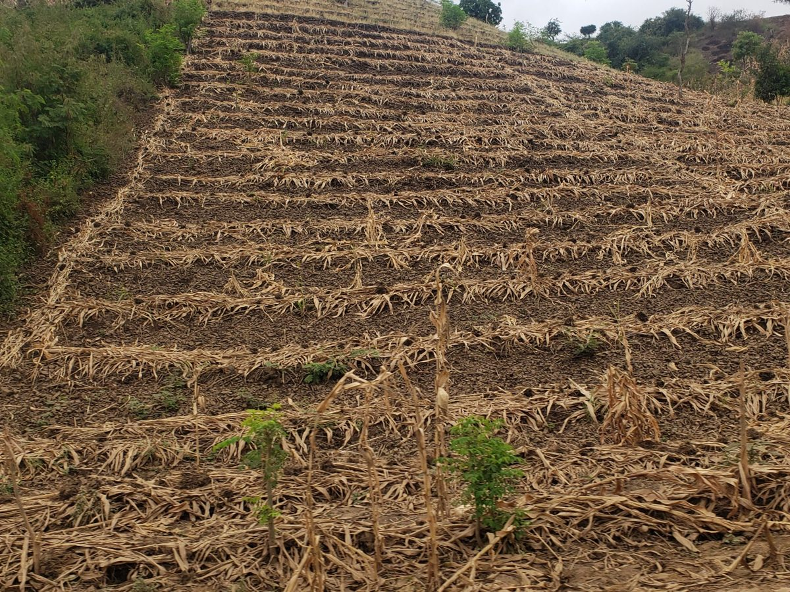
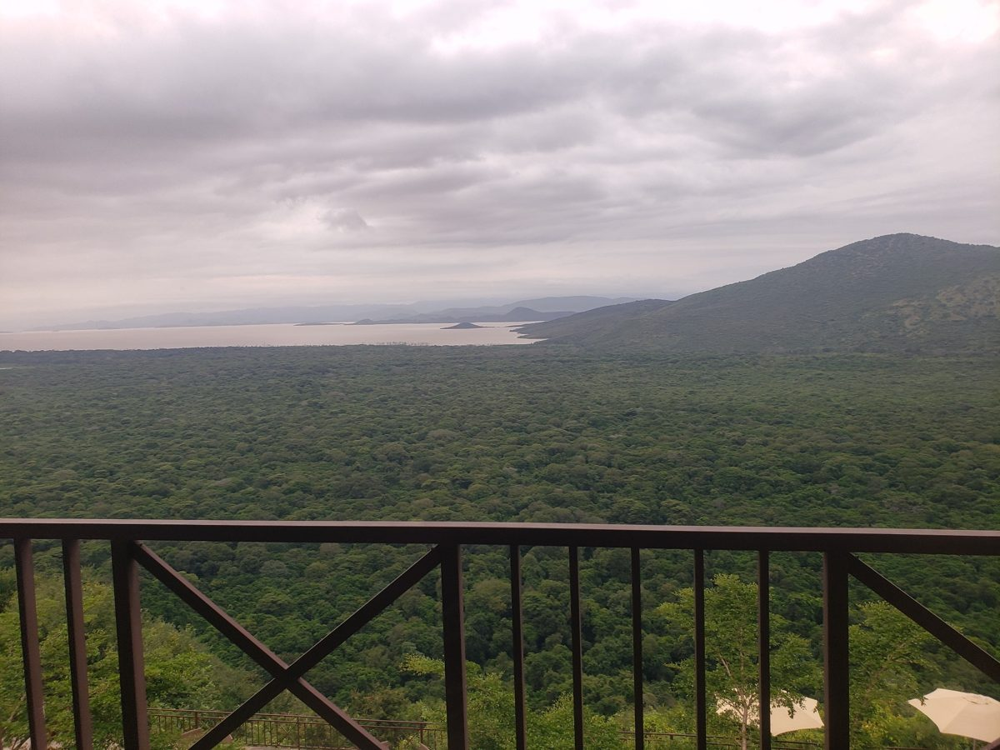
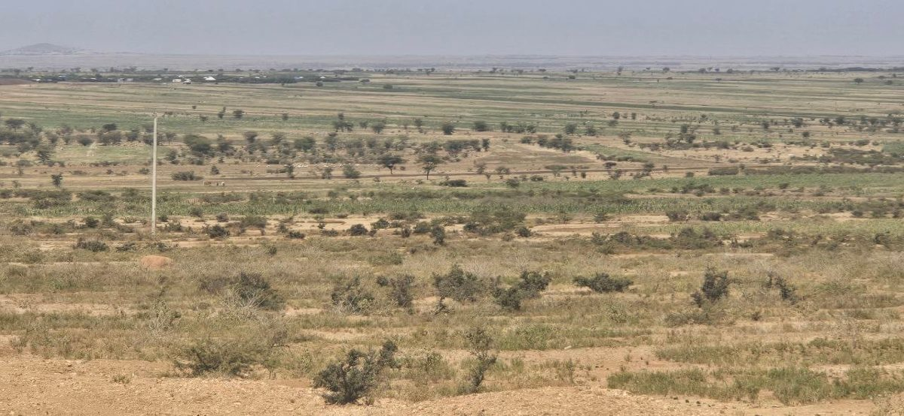
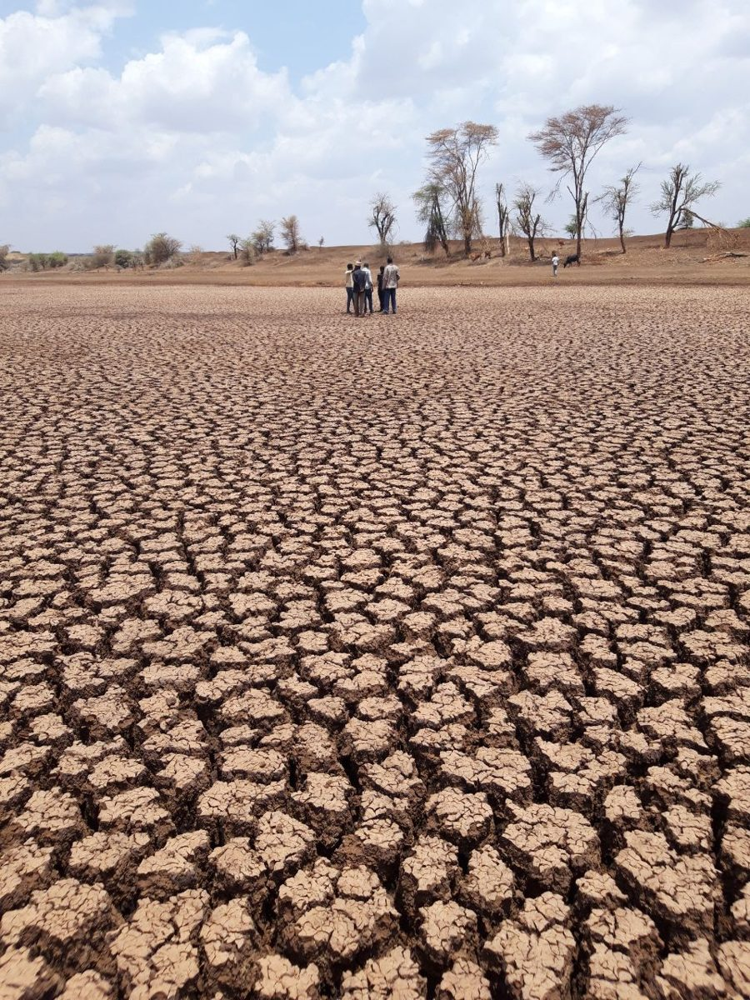
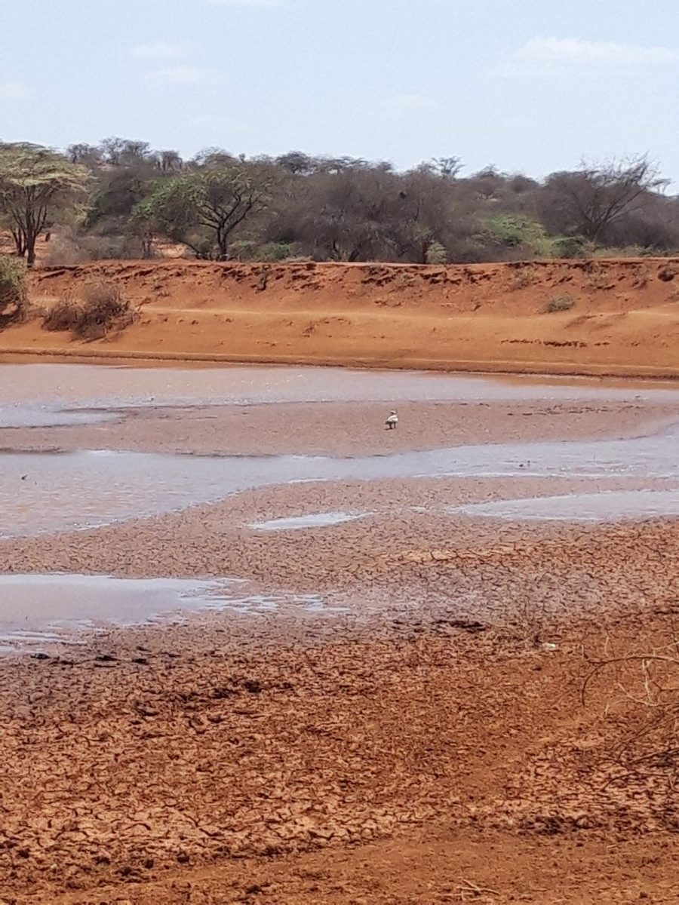

01
Carbon markets and project development
From carbon opportunity to credible market participation.
FeasibilityMRVBenefit sharing
Explore expertiseCarbon & Climate PACT Africa PLC (CCPA) develops practical, investment-ready and measurable solutions across climate action, carbon markets, resilient agriculture, nature, finance and digital innovation.
We connect science, innovation, finance, technology, markets and communities to move climate solutions from evidence and opportunity to implementation and measurable impact.



CCPA works with governments, development partners, businesses, investors, financial institutions, project developers, research organizations and communities to turn climate and environmental challenges into implementable, investable and measurable solutions.
Carbon & Climate PACT Africa PLC is an Africa-rooted private company providing specialized solutions across climate action, carbon markets, resilient agriculture, nature, finance and digital innovation.
Where people, ecosystems and economies thrive.
To transform climate, carbon, agriculture and nature opportunities into practical, investable and measurable solutions through science, innovation, finance, technology and partnership.
Generate, synthesize and apply credible scientific and technical knowledge.
Identify, test and adapt promising solutions to local contexts.
Translate technically viable interventions into investment-ready opportunities.
Apply digital tools where they strengthen measurement, transparency and decision-making.
Bring together institutions, businesses, communities, finance providers and technical expertise.
Connect proven approaches with implementation systems, markets and finance.
Solutions designed for African landscapes, institutions, markets and livelihoods.
Scientific and technical evidence informs recommendations, designs and decisions.
Strategy is connected with finance, delivery and scale.
Digital tools are used where they improve measurement, efficiency and transparency.
Solutions are built with institutions, businesses, research organizations and communities.
CCPA works through partnerships because complex climate and development challenges require complementary expertise, institutions and resources.
Policy implementation, programme development, institutional strengthening and scaling.
Applied research, evidence generation, innovation testing and knowledge translation.
Programme design, implementation, technical support and scaling.
Investment readiness, climate finance, blended finance, insurance and risk management.
Digital MRV, Earth observation, GIS, analytics, traceability and decision-support tools.
Co-design, implementation, natural-resource management, adoption and equitable benefit sharing.
Provides strategic and executive leadership across organizational development, partnerships, programme development and delivery of climate, carbon and nature solutions.
Provides strategic and technical expertise across climate adaptation, climate services, carbon finance, resilient and low-emission agriculture, rangelands, ecosystem restoration, digital monitoring and climate investment.
Provides strategic advisory expertise across institutional development, partnerships and the design and implementation of climate, carbon and sustainable-development initiatives.
Our expertise connects science, finance, technology, policy, ecosystems and implementation.
From carbon opportunity to credible market participation.
Turning climate and nature solutions into investable opportunities.
Turning climate information into early and effective action.
Restoring ecosystems that support people, climate and economies.
From data to trusted decisions.
Research that reaches people.
Connecting climate frameworks with implementation.
One climate. Interconnected systems.
Eleven complementary professional service lines. Each responds to a distinct client requirement and defines clear outputs.
Strategic advice for climate action, investment and implementation.
Feasibility studies • investment cases • programme concepts • implementation roadmaps
Explore moreSupporting credible participation in carbon markets.
Readiness assessments • MRV frameworks • aggregation • benefit sharing
Explore moreMoving evidence from research to application.
Applied studies • innovation assessments • policy briefs • scaling strategies
Explore moreStrengthening capabilities for effective climate action.
Professional courses • curricula • training-of-trainers • institutional assessments
Explore moreAnticipating climate risk and strengthening resilience.
Climate-risk profiles • early-warning frameworks • adaptation plans
Explore moreMaking the value of nature visible and actionable.
Natural-capital studies • restoration plans • ecosystem-service maps
Explore moreBuilding participation, trust and local ownership.
Stakeholder strategies • consultations • awareness campaigns • dialogue platforms
Explore moreTurning data and technology into better decisions.
Digital MRV • GIS analysis • dashboards • decision-support tools
Explore moreManaging environmental, social and climate risks.
Screening • impact assessments • management plans • safeguard frameworks
Explore moreConnecting climate-smart production with market opportunities.
Green-business models • value-chain assessments • market studies
Explore moreBringing together the expertise, institutions and resources required for delivery.
Consortium structures • partnership strategies • governance frameworks
Explore moreWhere statutory licensing or accreditation is required, regulated activities will be undertaken in accordance with applicable national requirements.

We are working on soil health, climate-smart agriculture, nutrient-use efficiency, water management, rangeland resilience, climate information and resilient value chains.

We are working on carbon project development, carbon accounting, MRV, market readiness, community aggregation, benefit sharing and carbon finance.

We are working on restoration approaches for forests, rangelands, watersheds, wetlands, agricultural landscapes and degraded lands.

We are working on Earth observation, GIS, digital MRV, climate analytics, mobile data systems and decision-support tools.

We are working on investment readiness, adaptation finance, carbon finance, nature finance, blended finance, insurance and climate-investment concepts.

We are working on climate-policy implementation, NDC implementation, adaptation planning, Article 6 readiness, institutional strengthening and international cooperation.
Across these areas, CCPA is working to bring together scientific evidence, local knowledge, technology, finance and partnerships so promising ideas can move toward demonstration, implementation and scale.
Each solution should be clearly identified as an operational solution, experience-informed solution, custom analytical solution or solution under development.
Screens potential mitigation, removal and restoration opportunities.
Assesses methodology, additionality, MRV, safeguards, governance, finance and market readiness.
Supports aggregation assessment for smallholder and community-based projects.
Tracks verified outcomes, revenue, costs, benefits and reinvestment.
Assesses technical, financial, institutional, environmental, social and MRV readiness.
Matches project characteristics with potential financing pathways.
Supports adaptation theory of change, indicators and measurement frameworks.
Tests combinations of grant, concessional, commercial, insurance and carbon finance.
Combines hazards, exposure and vulnerability.
Supports development of thresholds for drought, flood, heat, water scarcity and pasture stress.
Links forecast → trigger → action → institution → finance.
Integrates waterpoint status, pasture, rainfall, climate forecasts and advisories.
Prioritizes restoration using degradation, carbon, biodiversity, water, livelihoods and feasibility.
Maps ecosystem assets, services and pressures.
Supports restoration prioritization in dryland landscapes.
Assesses carbon, water, soil, habitat, grazing and livelihood values.
Integrates field data, Earth observation, GIS, analytics and reporting.
Supports land-cover, vegetation, water and restoration monitoring.
Transforms multiple datasets into decision-oriented climate information.
Tracks technical, environmental, financial and social performance.
Tracks evidence → innovation → demonstration → adoption → scale.
Assesses evidence, user demand, readiness, cost, institutional fit and scale potential.
Converts research into policy briefs, investment briefs, technical guides and decision tools.
Assesses evidence and delivery conditions required for scale.
Assesses institutional, accounting, MRV, registry and governance readiness.
Screens relevance to Article 6.2, Article 6.4 and Article 6.8.
Assesses alignment with NDCs, NAPs and long-term strategies.
Maps institutions, programmes, finance sources and cooperation opportunities.
Integrates information across water, ecosystems, energy and food systems.
Assesses supply, demand, efficiency, climate risk and competing uses.
Links production, water, energy, markets and climate risks.
Identifies cross-system trade-offs and opportunities for multiple benefits.
CCPA generates and translates knowledge to support policy, investment and implementation.
Scientific and applied research across climate, carbon, agriculture, nature and resilience.
Concise evidence for policymakers and institutions.
Climate, carbon and nature opportunities for investors and financing partners.
Practical methodologies and implementation guidance.
Carbon accounting, market integrity, MRV and market developments.
Investment readiness, financing approaches and emerging mechanisms.
Evidence and lessons from implementation and professional experience.
Diagnostics, dashboards, models and decision-support products.
CCPA works with institutions seeking to translate climate ambition into practical implementation. We welcome collaboration on joint project development, technical implementation, research and innovation, carbon-market initiatives, climate and nature finance, digital MRV, capacity development, policy support and consortium development.
This standalone HTML uses your default email application to send enquiries to contact@car.com. A live production deployment can connect the same form to a secure backend.